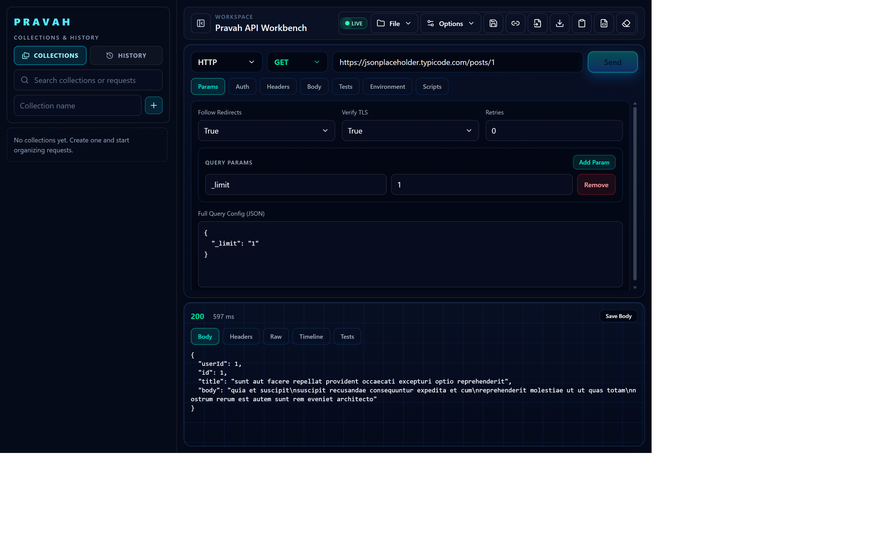
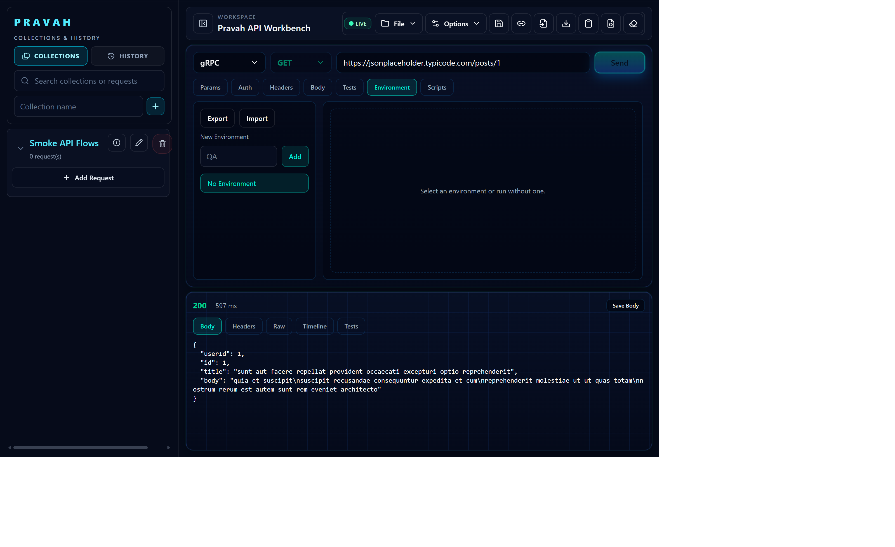

Workbench Overview
Main request composer with method, endpoint, tabbed configuration panels, and workspace command bar.
Cross-platform API testing desktop workbench built with Tauri + React, backed by orchestrator and executor services, with multi-protocol request design, collections, history, environments, and script-driven testing.
All screenshots are captured from the running Pravah app using the same fixed viewport size for consistency.
Main request composer with method, endpoint, tabbed configuration panels, and workspace command bar.

Successful execution state with status, latency, body, headers, timeline, and export actions for analysis.

Burp-style catch and inspect workflow for request and response payloads across body, headers, raw, and timeline tabs.
Save and organize reusable requests in collections with structure ready for team workflow and repeat runs.
Past request trail in sidebar mode for quick replay, audit, and response comparison across iterations.
Dedicated authentication panel for secure request setup across multiple service integration scenarios.
Environment management for switching runtime configs and endpoint contexts without editing each request manually.
Protocol switcher drives GraphQL-specific query and variable experience from the same unified workbench.

gRPC request composition through protocol-aware controls designed for modern service mesh and microservice APIs.